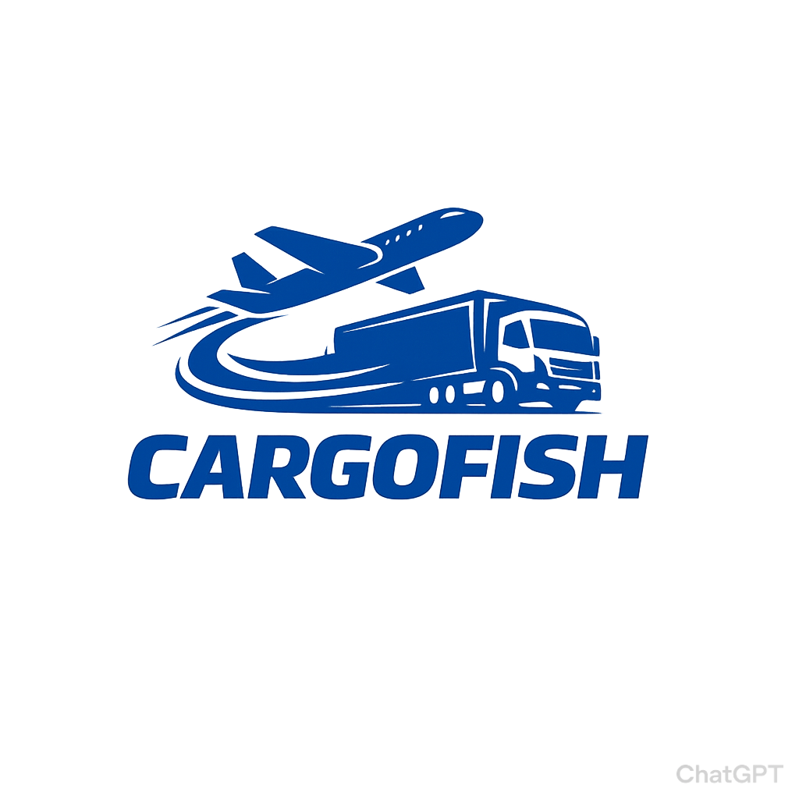

Featured Work
Latest Projects

SkyCast
Weather

A dedicated Software Developer specializing in Python backends and crafting modern web interfaces with HTML, Tailwind CSS, & JavaScript.
def solve_problem(requirement):
logic = "Python built"
ui = "Tailwind CSS designed"
ux = "JavaScript enabled"
return f"Delivered {logic}, {ui}, & {ux}"
I am Odewunmi Mohammed, a software developer with a strong foundation in building dynamic applications. My core expertise lies in Python, where I enjoy solving complex logic problems and handling robust backend implementations.
To compliment my backend skills, I have intensively studied and mastered frontend technologies, specifically HTML5, Tailwind CSS, and JavaScript. This complete stack allows me to take an idea from a logical script all the way to a beautifully stylized, interactive web application. I believe great code should not only function flawlessly but also look stunning natively in the browser.
I started with curiosity around how websites work, and that grew into building full products end-to-end. Today, I focus on shipping reliable backend logic with clean user interfaces that feel fast, clear, and polished.
Scripts & APIs
Clean Structure
Responsive Design
Web Interactivity

Whether you have an idea in mind or need a developer to craft tailored Python backend systems seamlessly connected to stunning frontends, I'm ready to help.
Send me an Email